Sequencing assays
Stefano Mangiola, South Australian immunoGENomics Cancer Institute1, Walter and Eliza Hall Institute2
Source:vignettes/Session_1_sequencing_assays.Rmd
Session_1_sequencing_assays.RmdSession 1: Spatial Analysis of Sequencing Data
Web rendering: https://rpubs.com/mangiolas/1186971
Overview
This workshop introduces spatial transcriptomics analysis using the
Bioconductor framework, with a particular focus on the
SpatialExperiment package. Participants will learn
essential concepts and practical skills for analyzing spatially-resolved
genomic data.
Learning Objectives
By the end of this session, participants will be able to: -
Understand the fundamentals of spatial transcriptomics data analysis -
Work with the SpatialExperiment package and related tools -
Perform basic data manipulation and visualization of spatial data -
Apply quality control measures to spatial transcriptomics data - Conduct
dimensionality reduction and clustering analyses - Interpret spatial
patterns in gene expression data
Introduction to Bioconductor
Bioconductor is an open-source, open-development software project built on the R programming language. It provides powerful tools for analyzing and comprehending high-throughput genomic data.
Key Features
-
Comprehensive Package Ecosystem
- Over 2,000 software packages
- Specialized tools for various types of genomic data
- Integration capabilities across different data types
-
Quality Standards
- Rigorous peer review process
- Consistent documentation
- Regular version updates
-
Community Support
- Active developer community
- Extensive documentation
- Regular workshops and conferences
Spatial Omics Analysis in Bioconductor
Spatial omics analysis combines traditional genomic data with spatial information, enabling researchers to understand gene expression patterns within their tissue context. Bioconductor provides several specialized tools for this purpose:
- Dedicated spatial analysis packages
- Integration with existing genomic analysis workflows
- Visualization tools for spatial data
- Statistical methods for spatial patterns
Support Resources
- Slack channel: #community-bioc
- Support forum: https://support.bioconductor.org/
In the following sections of this workshop, we will explore practical examples and dive deeper into how Bioconductor is used in spatial omics analyses, including hands-on coding examples. Stay tuned for an engaging journey through spatial omics with Bioconductor!
2. Getting Started with SpatialExperiment
The SpatialExperiment package provides a robust
framework for handling spatial transcriptomics data. It extends the
SingleCellExperiment class by adding functionality specific
to spatial data:
- Storage of spatial coordinates
- Management of tissue images
- Integration of spot-based and cell-based data
- Specialized methods for spatial analysis
Righelli et al. doi: 10.1093/bioinformatics/btac299
## here() starts at /__w/tidySpatialWorkshop/tidySpatialWorkshop
# Install BiocManager
if (!requireNamespace("BiocManager", quietly = TRUE))
install.packages("BiocManager")
# Install SpatialExperiment package
BiocManager::install("SpatialExperiment")3. Downloading Example Dataset
We’ll work with data from the spatialLIBD package, which
contains spatial transcriptomics data from human dorsolateral prefrontal
cortex. This dataset provides an excellent example for learning spatial
analysis techniques as it includes:
- Multiple tissue sections
- Known anatomical layers
- Rich molecular information
- High-quality imaging data
# Load the SpatialExperiment package
# For SpatialExperiment the following might be needed
# 1. bash: module load ImageMagick/6.9.11-22
# 2. R: devtools::install_github("ropensci/magick")
library(SpatialExperiment)Visualisation functions for spatial transcriptomics data.
Utility packages for single-cell data.
In this section, we explore the handling and processing of spatial
transcriptomics data using the spatialLIBD and
ExperimentHub packages. The following R code block
retrieves a specific dataset from the ExperimentHub, a
Bioconductor project designed to manage and distribute large biological
data sets. The code efficiently fetches the data, removes any existing
dimensional reductions, and filters the dataset to include only selected
samples. This approach is essential for analysing spatial patterns in
gene expression across multiple samples, and the code below exemplifies
how to manipulate these datasets in preparation for further analysis.
This process is adapted from the Banksy package’s vignette,
which provides advanced methods for multi-sample spatial
transcriptomics.
Maynard and Torres et al., doi: 10.1038/s41593-020-00787-0, tutorial
library(spatialLIBD)
library(ExperimentHub)
spatial_data <-
ExperimentHub::ExperimentHub() |>
spatialLIBD::fetch_data( eh = _, type = "spe")
names(libd_layer_colors) = gsub("ayer", "", names(libd_layer_colors))
# Clear the reductions
reducedDims(spatial_data) = NULL
# Select only 3 samples
spatial_data = spatial_data[,spatial_data$sample_id %in% c("151673", "151675", "151676")]
# Display the object
spatial_data## class: SpatialExperiment
## dim: 33538 10691
## metadata(0):
## assays(2): counts logcounts
## rownames(33538): ENSG00000243485 ENSG00000237613 ... ENSG00000277475
## ENSG00000268674
## rowData names(9): source type ... gene_search is_top_hvg
## colnames(10691): AAACAAGTATCTCCCA-1 AAACAATCTACTAGCA-1 ...
## TTGTTTCCATACAACT-1 TTGTTTGTGTAAATTC-1
## colData names(69): sample_id Cluster ... array_row array_col
## reducedDimNames(0):
## mainExpName: NULL
## altExpNames(0):
## spatialCoords names(2) : pxl_col_in_fullres pxl_row_in_fullres
## imgData names(4): sample_id image_id data scaleFactorFrom: https://bookdown.org/sjcockell/ismb-tutorial-2023/practical-session-2.html
We shows metadata for each cell, helping understand the dataset’s structure.
| sample_id | Cluster | sum_umi | sum_gene | subject | position | replicate | subject_position | discard | key | cell_count | SNN_k50_k4 | SNN_k50_k5 | SNN_k50_k6 | SNN_k50_k7 | SNN_k50_k8 | SNN_k50_k9 | SNN_k50_k10 | SNN_k50_k11 | SNN_k50_k12 | SNN_k50_k13 | SNN_k50_k14 | SNN_k50_k15 | SNN_k50_k16 | SNN_k50_k17 | SNN_k50_k18 | SNN_k50_k19 | SNN_k50_k20 | SNN_k50_k21 | SNN_k50_k22 | SNN_k50_k23 | SNN_k50_k24 | SNN_k50_k25 | SNN_k50_k26 | SNN_k50_k27 | SNN_k50_k28 | GraphBased | Maynard | Martinowich | layer_guess | layer_guess_reordered | layer_guess_reordered_short | expr_chrM | expr_chrM_ratio | SpatialDE_PCA | SpatialDE_pool_PCA | HVG_PCA | pseudobulk_PCA | markers_PCA | SpatialDE_UMAP | SpatialDE_pool_UMAP | HVG_UMAP | pseudobulk_UMAP | markers_UMAP | SpatialDE_PCA_spatial | SpatialDE_pool_PCA_spatial | HVG_PCA_spatial | pseudobulk_PCA_spatial | markers_PCA_spatial | SpatialDE_UMAP_spatial | SpatialDE_pool_UMAP_spatial | HVG_UMAP_spatial | pseudobulk_UMAP_spatial | markers_UMAP_spatial | spatialLIBD | ManualAnnotation | in_tissue | array_row | array_col | |
|---|---|---|---|---|---|---|---|---|---|---|---|---|---|---|---|---|---|---|---|---|---|---|---|---|---|---|---|---|---|---|---|---|---|---|---|---|---|---|---|---|---|---|---|---|---|---|---|---|---|---|---|---|---|---|---|---|---|---|---|---|---|---|---|---|---|---|---|---|---|
| AAACAAGTATCTCCCA-1 | 151673 | 7 | 8458 | 3586 | Br8100 | 0 | 1 | Br8100_pos0 | FALSE | 151673_AAACAAGTATCTCCCA-1 | 6 | 1 | 1 | 1 | 1 | 1 | 1 | 1 | 4 | 4 | 4 | 4 | 3 | 3 | 3 | 2 | 2 | 2 | 2 | 1 | 1 | 1 | 6 | 5 | 5 | 4 | 7 | 2_3 | 2 | Layer3 | Layer3 | L3 | 1407 | 0.1663514 | 3 | 3 | 2 | 2 | 2 | 1 | 1 | 3 | 1 | 1 | 3 | 1 | 1 | 3 | 1 | 7 | 1 | 1 | 2 | 1 | L3 | NA | TRUE | 50 | 102 |
| AAACAATCTACTAGCA-1 | 151673 | 4 | 1667 | 1150 | Br8100 | 0 | 1 | Br8100_pos0 | FALSE | 151673_AAACAATCTACTAGCA-1 | 16 | 1 | 1 | 1 | 1 | 1 | 1 | 1 | 4 | 4 | 4 | 4 | 3 | 3 | 3 | 2 | 2 | 2 | 2 | 1 | 1 | 1 | 10 | 10 | 10 | 10 | 4 | 2_3 | 3 | Layer1 | Layer1 | L1 | 204 | 0.1223755 | 2 | 5 | 3 | 7 | 8 | 2 | 2 | 2 | 2 | 1 | 7 | 5 | 2 | 2 | 3 | 2 | 1 | 4 | 2 | 3 | L1 | NA | TRUE | 3 | 43 |
| AAACACCAATAACTGC-1 | 151673 | 8 | 3769 | 1960 | Br8100 | 0 | 1 | Br8100_pos0 | FALSE | 151673_AAACACCAATAACTGC-1 | 5 | 2 | 3 | 4 | 5 | 8 | 9 | 10 | 11 | 10 | 9 | 10 | 11 | 11 | 12 | 13 | 12 | 11 | 11 | 12 | 20 | 20 | 21 | 22 | 21 | 22 | 8 | WM | WM | WM | WM | WM | 430 | 0.1140886 | 4 | 4 | 7 | 5 | 5 | 5 | 5 | 6 | 6 | 1 | 5 | 4 | 4 | 5 | 3 | 5 | 7 | 5 | 3 | 2 | WM | NA | TRUE | 59 | 19 |
| AAACAGAGCGACTCCT-1 | 151673 | 6 | 5433 | 2424 | Br8100 | 0 | 1 | Br8100_pos0 | FALSE | 151673_AAACAGAGCGACTCCT-1 | 2 | 1 | 1 | 1 | 1 | 1 | 1 | 1 | 2 | 2 | 2 | 2 | 1 | 1 | 1 | 4 | 4 | 4 | 4 | 3 | 3 | 3 | 2 | 2 | 2 | 7 | 6 | 6 | 6 | Layer3 | Layer3 | L3 | 1316 | 0.2422234 | 3 | 3 | 2 | 3 | 6 | 1 | 1 | 3 | 1 | 3 | 3 | 3 | 1 | 2 | 2 | 3 | 4 | 2 | 1 | 1 | L3 | NA | TRUE | 14 | 94 |
| AAACAGCTTTCAGAAG-1 | 151673 | 3 | 4278 | 2264 | Br8100 | 0 | 1 | Br8100_pos0 | FALSE | 151673_AAACAGCTTTCAGAAG-1 | 4 | 1 | 1 | 1 | 1 | 1 | 3 | 3 | 3 | 3 | 3 | 3 | 2 | 2 | 2 | 1 | 1 | 1 | 1 | 6 | 6 | 6 | 5 | 4 | 4 | 3 | 3 | 5 | 5 | Layer5 | Layer5 | L5 | 651 | 0.1521739 | 2 | 1 | 1 | 4 | 2 | 1 | 1 | 7 | 3 | 4 | 2 | 1 | 2 | 4 | 1 | 3 | 3 | 8 | 4 | 4 | L5 | NA | TRUE | 43 | 9 |
| AAACAGGGTCTATATT-1 | 151673 | 3 | 4004 | 2178 | Br8100 | 0 | 1 | Br8100_pos0 | FALSE | 151673_AAACAGGGTCTATATT-1 | 6 | 2 | 4 | 5 | 6 | 5 | 6 | 7 | 8 | 12 | 12 | 13 | 14 | 15 | 16 | 17 | 17 | 17 | 16 | 17 | 16 | 16 | 17 | 18 | 17 | 18 | 3 | 5 | 5 | Layer6 | Layer6 | L6 | 621 | 0.1550949 | 6 | 7 | 8 | 8 | 4 | 1 | 7 | 1 | 3 | 4 | 6 | 8 | 7 | 7 | 7 | 3 | 3 | 3 | 4 | 4 | L6 | NA | TRUE | 47 | 13 |
We access and display feature-related information from the dataset.
| source | type | gene_id | gene_version | gene_name | gene_source | gene_biotype | gene_search | is_top_hvg | |
|---|---|---|---|---|---|---|---|---|---|
| ENSG00000243485 | havana | gene | ENSG00000243485 | 5 | MIR1302-2HG | havana | lincRNA | MIR1302-2HG; ENSG00000243485 | FALSE |
| ENSG00000237613 | havana | gene | ENSG00000237613 | 2 | FAM138A | havana | lincRNA | FAM138A; ENSG00000237613 | FALSE |
| ENSG00000186092 | ensembl_havana | gene | ENSG00000186092 | 6 | OR4F5 | ensembl_havana | protein_coding | OR4F5; ENSG00000186092 | FALSE |
| ENSG00000238009 | ensembl_havana | gene | ENSG00000238009 | 6 | AL627309.1 | ensembl_havana | lincRNA | AL627309.1; ENSG00000238009 | FALSE |
| ENSG00000239945 | havana | gene | ENSG00000239945 | 1 | AL627309.3 | havana | lincRNA | AL627309.3; ENSG00000239945 | FALSE |
| ENSG00000239906 | havana | gene | ENSG00000239906 | 1 | AL627309.2 | havana | antisense | AL627309.2; ENSG00000239906 | FALSE |
Here, we perform a preliminary examination of the assay data contained within the spatial dataset.
assay(spatial_data)[1:20, 75:100]## 20 x 26 sparse Matrix of class "dgCMatrix"## [[ suppressing 26 column names 'AACCAGTATCACTCTT-1', 'AACCATAGGGTTGAAC-1', 'AACCATGGGATCGCTA-1' ... ]]##
## ENSG00000243485 . . . . . . . . . . . . . . . . . . . . . . . . . .
## ENSG00000237613 . . . . . . . . . . . . . . . . . . . . . . . . . .
## ENSG00000186092 . . . . . . . . . . . . . . . . . . . . . . . . . .
## ENSG00000238009 . . . . . . . . . . . . . . . . . . . . . . . . . .
## ENSG00000239945 . . . . . . . . . . . . . . . . . . . . . . . . . .
## ENSG00000239906 . . . . . . . . . . . . . . . . . . . . . . . . . .
## ENSG00000241599 . . . . . . . . . . . . . . . . . . . . . . . . . .
## ENSG00000236601 . . . . . . . . . . . . . . . . . . . . . . . . . .
## ENSG00000284733 . . . . . . . . . . . . . . . . . . . . . . . . . .
## ENSG00000235146 . . . . . . . . . . . . . . . . . . . . . . . . . .
## ENSG00000284662 . . . . . . . . . . . . . . . . . . . . . . . . . .
## ENSG00000229905 . . . . . . . . . . . . . . . . . . . . . . . . . .
## ENSG00000237491 . . . . . . . . . . . . . 1 . . . . . . 1 . . . . 2
## ENSG00000177757 . . . . . . . . . . . . . . . . . . . . . . . . . .
## ENSG00000225880 . . . . . . . . . . . . . . . . . . . . . . . . . .
## ENSG00000230368 . . . . . . . . . . . . . . . . . . . . . . . . . .
## ENSG00000272438 . . . . . . . . . . . . . . . . . . . . . . . . . .
## ENSG00000230699 . . . . . . . . . . . . . . . . . . . . . . . . . .
## ENSG00000241180 . . . . . . . . . . . . . . . . . . . . . . . . . .
## ENSG00000223764 . . . . . . . . . . . . . . . . . . . . . . . . . .4. Data Visualisation and Manipulation
Spatial transcriptomics data requires specialized visualization
approaches to understand both molecular and spatial aspects
simultaneously. The ggspavis package provides powerful
tools for this purpose:
# image data
imgData(spatial_data)## DataFrame with 3 rows and 4 columns
## sample_id image_id data scaleFactor
## <character> <character> <list> <numeric>
## 1 151673 lowres #### 0.0450045
## 2 151675 lowres #### 0.0450045
## 3 151676 lowres #### 0.0450045
# Simple visualization of spatial data
ggspavis::plotSpots(spatial_data) +
facet_wrap(~sample_id)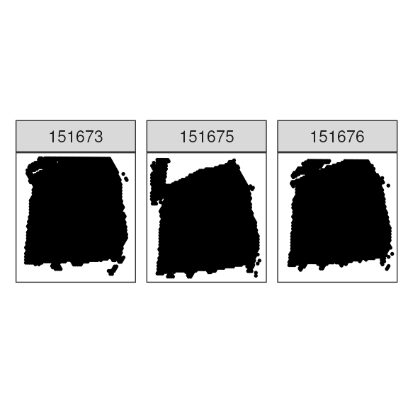
We can enhance our understanding by adding layer annotations. In this dataset, layers L1-6 represent different cortical layers, while WM indicates white matter:
# Plot spots with anatomical annotations
ggspavis::plotSpots(
spatial_data,
annotate = "spatialLIBD"
) +
facet_wrap(~sample_id)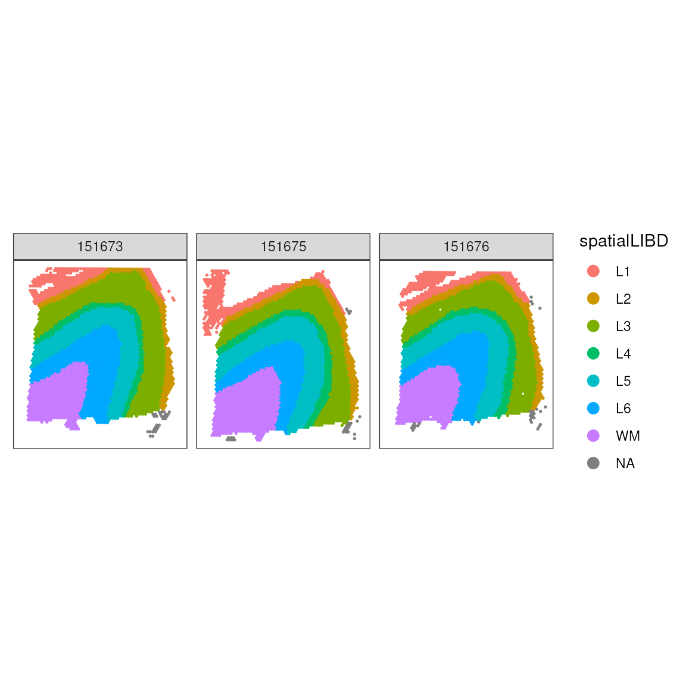
Explore additional visualisation features offered by the Visium platform, exposing the H&E (hematoxylin and eosin) image.
ggspavis::plotVisium(spatial_data)
This visualisation focuses on specific tissue features within the dataset, emphasising areas of interest. 1. Mitochondrial Content: High mitochondrial gene expression often indicates stressed or dying cells 2. Library Size: Total RNA content per spot 3. Number of Detected Genes: Diversity of gene expression per spot
ggspavis::plotVisium(
spatial_data,
annotate = "spatialLIBD",
highlight = "in_tissue"
) +
facet_wrap(~sample_id)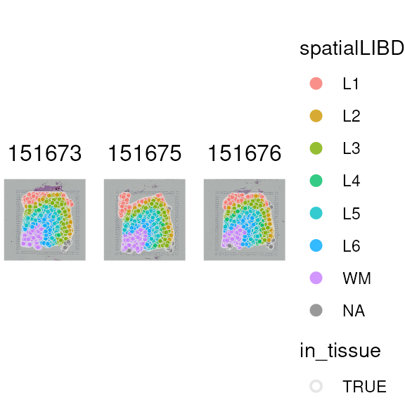
5. Quality control and filtering
We will use the scater package McCarthy
et al. 2017 to compute the three primary QC metrics we discussed
earlWe’llUsing the scater Package for QC Metrics: We’ll apply the
scater package to compute three primary quality control
metrics. We’ll also use ggspavis for visualisation along
with some custom plotting techniques.
Previously, we visualised both on- and off-tissue spots. Moving forward, we focus on on-tissue spots for more relevant analyses. This block shows how to filter out off-tissue spots to refine the dataset.
Source OSTAWorkshopBioc2021
## Dataset dimensions before the filtering
dim(spatial_data)## [1] 33538 10691Filtering Dataset to Retain Only On-Tissue Spots: We then refine our dataset by keeping only those spots that are on-tissue, aligning with our focus for subsequent analysis. The dimensions of the dataset after filtering are displayed to confirm the changes.
## Subset to keep only on-tissue spots
spatial_data <- spatial_data[, colData(spatial_data)$in_tissue == 1]
dim(spatial_data)## [1] 33538 10691Mitochondrial
Next, we identify mitochondrial genes, as they are indicative of cell health. Cells with high mitochondrial gene expression typically indicate poor health or dying cells, which we aim to exclude.
## Classify genes as "mitochondrial" (is_mito == TRUE)
## or not (is_mito == FALSE)
is_gene_mitochondrial <- grepl("(^MT-)|(^mt-)", rowData(spatial_data)$gene_name)
rowData(spatial_data)$gene_name[is_gene_mitochondrial]## [1] "MT-ND1" "MT-ND2" "MT-CO1" "MT-CO2" "MT-ATP8" "MT-ATP6" "MT-CO3"
## [8] "MT-ND3" "MT-ND4L" "MT-ND4" "MT-ND5" "MT-ND6" "MT-CYB"After identifying mitochondrial genes, we apply quality control metrics to further clean the dataset. This involves adding per-cell QC measures and setting a threshold to exclude cells with high mitochondrial transcription.
## Add per-cell QC metrics to spatial data using identified mitochondrial genes
spatial_data <- scater::addPerCellQC(
spatial_data,
subsets = list(mito = is_gene_mitochondrial)
)
## Select expressed genes threshold
qc_mitochondrial_transcription <- colData(spatial_data)$subsets_mito_percent > 30
## Check how many spots are filtered out
table(qc_mitochondrial_transcription)## qc_mitochondrial_transcription
## FALSE TRUE
## 10599 92After applying the QC metrics, it’s crucial to visually assess their impact. This step involves checking the spatial pattern of the spots removed based on high mitochondrial transcription, helping us understand the distribution and quality of the remaining dataset.
## Add threshold in colData
colData(spatial_data)$qc_mitochondrial_transcription <- qc_mitochondrial_transcription
## Visualize spatial pattern of filtered spots
plotSpotQC(
spatial_data,
plot_type = "spot",
annotate = "qc_mitochondrial_transcription"
) +
facet_wrap(~sample_id)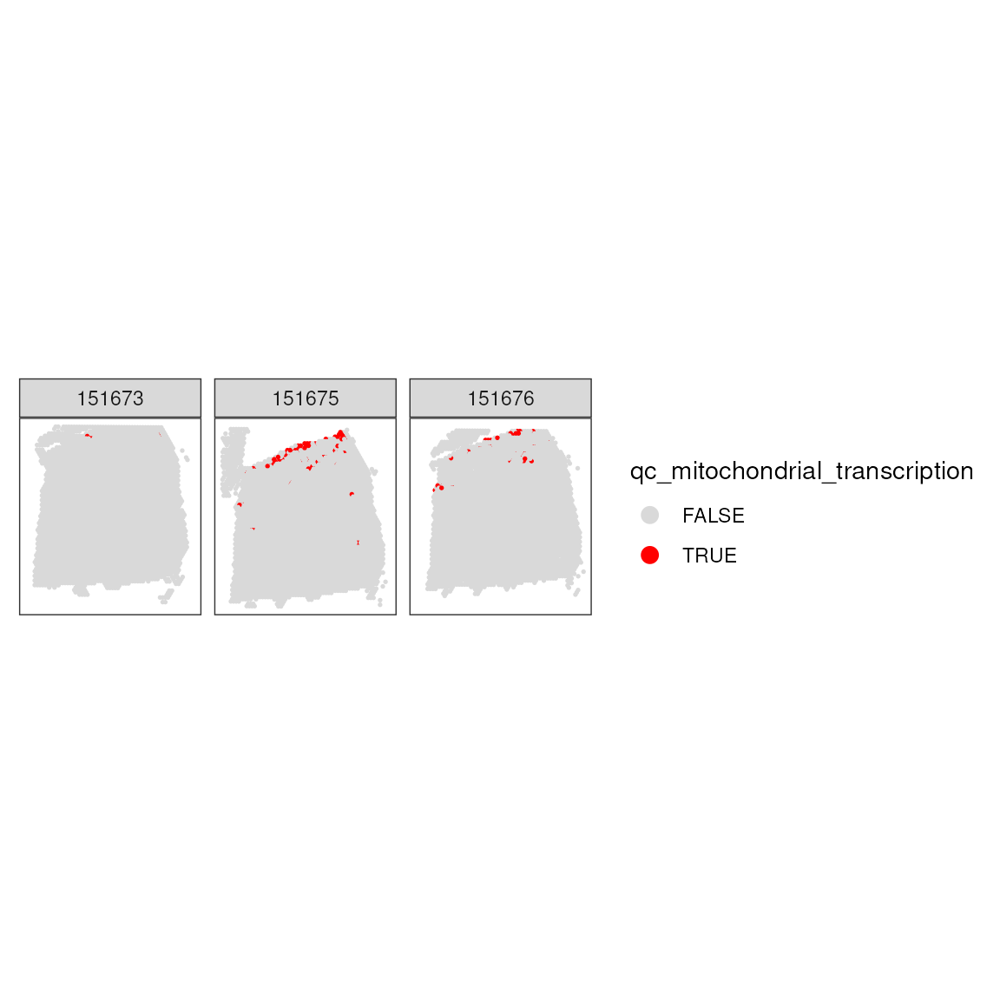
Library Size Analysis
This analysis focuses on examining the distribution of library sizes across different spots. It uses a histogram and density plot to visualise the range and commonality of library sizes in the dataset.
## Visualize library size distribution
data.frame(colData(spatial_data)) |>
ggplot(aes(x = sum)) +
geom_histogram(aes(y = after_stat(density)), bins = 60) +
geom_density() +
scale_x_log10() +
xlab("Library size") +
ylab("Density") +
theme_classic()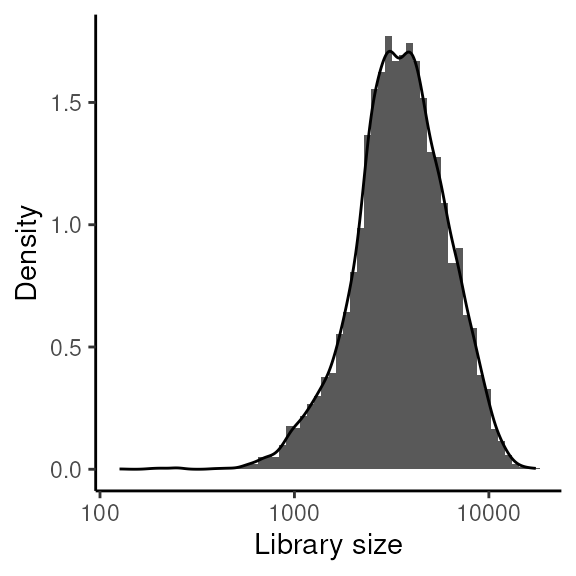
Setting Library Size Threshold: After examining the library sizes, a threshold is applied to identify spots with library sizes below 700, which are considered for potential exclusion from further analysis.
## Select library size threshold
qc_total_counts <- colData(spatial_data)$sum < 700
## Check how many spots are filtered out
table(qc_total_counts)## qc_total_counts
## FALSE TRUE
## 10639 52Incorporating Library Size Threshold in Dataset: This step involves adding the library size threshold to the dataset’s metadata and examining the spatial pattern of the spots that have been removed based on this criterion.
## Add threshold in colData
colData(spatial_data)$qc_total_counts <- qc_total_counts
## Check for putative spatial pattern of removed spots
plotSpotQC(
spatial_data,
plot_type = "spot",
annotate = "qc_total_counts",
) +
facet_wrap(~sample_id)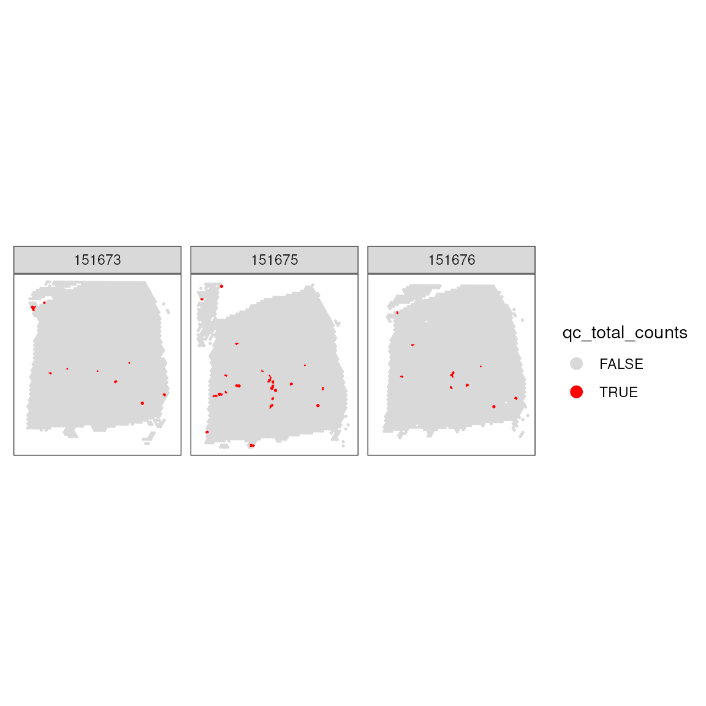
Detected genes
This analysis examines how many genes are expressed per spot, using a histogram and density plot to visualise the distribution of gene counts across the dataset.
## Density and histogram of library sizes
data.frame(colData(spatial_data) ) |>
ggplot(aes(x = detected)) +
geom_histogram(aes(y = after_stat(density)), bins = 60) +
geom_density() +
scale_x_log10() +
xlab("Number of genes with > 0 counts") +
ylab("Density") +
theme_classic()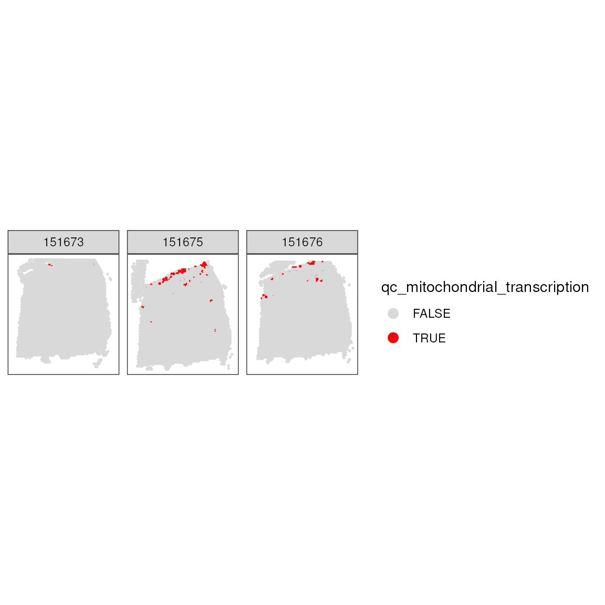
Setting Gene Expression Threshold: This block applies a threshold to identify spots with fewer than 500 detected genes, considering these for exclusion to ensure data quality.
## Select expressed genes threshold
qc_detected_genes <- colData(spatial_data)$detected < 500
## Check how many spots are filtered out
table(qc_detected_genes)## qc_detected_genes
## FALSE TRUE
## 10642 49Incorporating Gene Expression Threshold in Dataset: After setting the gene expression threshold, it is added to the dataset’s metadata. The spatial pattern of spots removed based on this threshold is then examined.
## Add threshold in colData
colData(spatial_data)$qc_detected_genes <- qc_detected_genes
## Check for putative spatial pattern of removed spots
plotSpotQC(
spatial_data,
plot_type = "spot",
annotate = "qc_detected_genes",
) +
facet_wrap(~sample_id)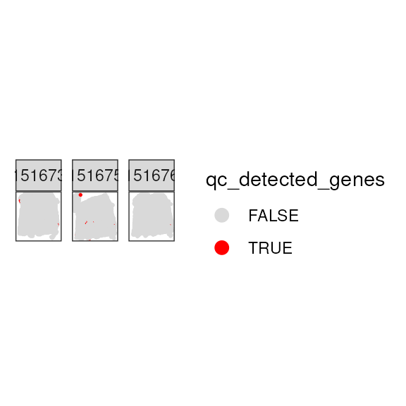
Exploring the Relationship Between Library Size and Number of Genes Detected: This analysis explores the correlation between library size and the number of genes detected in each spot, providing insights into data quality and sequencing depth.
## Density and histogram of library sizes
data.frame(colData(spatial_data)) |>
ggplot(aes(sum, detected)) +
geom_point(shape=".") +
scale_x_log10() +
scale_y_log10() +
xlab("Library size") +
ylab("Number of genes with > 0 counts") +
theme_classic()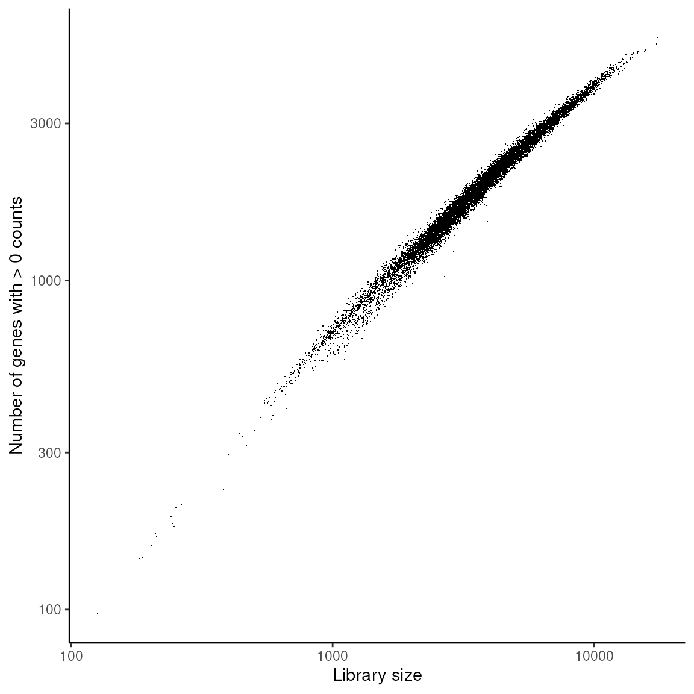
Combined filtering
After applying all QC filters, this block combines them and stores the results in the dataset. The spatial patterns of all discarded spots are then reviewed to ensure comprehensive quality control.
## Store the set in the object
colData(spatial_data)$discard <- qc_total_counts | qc_detected_genes | qc_mitochondrial_transcription
## Check the spatial pattern of combined set of discarded spots
plotSpotQC(
spatial_data,
plot_type = "spot",
annotate = "discard",
) +
facet_wrap(~sample_id)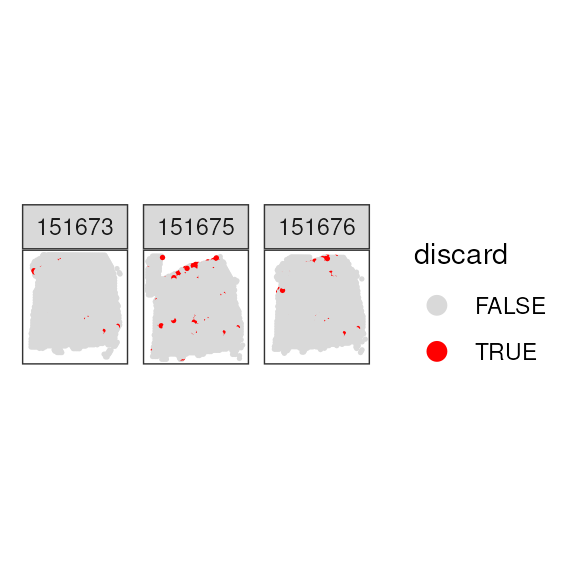
The final step in data preprocessing involves removing all spots identified as low-quality based on the previously applied thresholds, refining the dataset for subsequent analyses.
spatial_data = spatial_data[,!colData(spatial_data)$discard ]6. Dimensionality reduction
Dimensionality reduction is essential in spatial transcriptomics due to the high-dimensional nature of the data, which includes vast gene expression profiles across various spatial locations. Techniques such as PCA (Principal Component Analysis) and UMAP (Uniform Manifold Approximation and Projection) are particularly valuable. PCA helps to reduce noise and highlight the most significant variance in the data, making it simpler to uncover underlying patterns and correlations. UMAP, ofen calculated from principal components (and not directly from features) preserves both global and local data structures, enabling more nuanced visualisations of complex cellular landscapes. Together, these methods facilitate a deeper understanding of spatial gene expression, helping to reveal biological insights such as cellular heterogeneity and tissue structure, which are crucial for both basic biological research and clinical applications.
Variable gene identification
genes <- !grepl(pattern = "^Rp[l|s]|Mt", x = rownames(spatial_data))
dec = scran::modelGeneVar(spatial_data, subset.row = genes)
# Visualisation
plot(dec$mean, dec$total, xlab = "Mean log-expression", ylab = "Variance")
curve(metadata(dec)$trend(x), col = "blue", add = TRUE)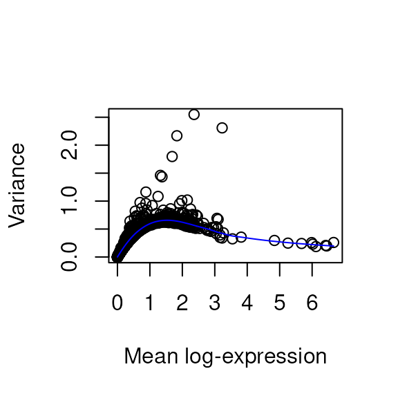
# Get top variable genes
dec = scran::modelGeneVar(spatial_data, subset.row = genes, block = spatial_data$sample_id)
hvg = scran::getTopHVGs(dec, n = 1000)
rowData(spatial_data[head(hvg),])[,c("gene_id", "gene_name")]## DataFrame with 6 rows and 2 columns
## gene_id gene_name
## <character> <character>
## ENSG00000123560 ENSG00000123560 PLP1
## ENSG00000197971 ENSG00000197971 MBP
## ENSG00000110484 ENSG00000110484 SCGB2A2
## ENSG00000131095 ENSG00000131095 GFAP
## ENSG00000173786 ENSG00000173786 CNP
## ENSG00000109846 ENSG00000109846 CRYABPCA
With the highly variable genes, we perform PCA to reduce dimensionality, followed by UMAP to visualise the data in a lower-dimensional space, enhancing our ability to observe clustering and patterns in the data.
spatial_data <-
spatial_data |>
scuttle::logNormCounts() |>
scater::runPCA(subset_row = hvg)
## Check correctness - names
reducedDimNames(spatial_data)## [1] "PCA"
reducedDim(spatial_data, "PCA")[1:5, 1:5]## PC1 PC2 PC3 PC4 PC5
## AAACAAGTATCTCCCA-1 4.323918 -0.9600003 -0.3514095 -2.2100416 -0.05912948
## AAACAATCTACTAGCA-1 1.560326 2.1527877 -0.8244904 0.3135456 -0.76248069
## AAACACCAATAACTGC-1 -19.168276 -2.2825249 -0.1300977 -0.2591148 -2.48548951
## AAACAGAGCGACTCCT-1 3.070884 1.0284710 -1.0845869 -2.6911326 0.88723306
## AAACAGCTTTCAGAAG-1 1.588394 -2.2461043 2.9044546 -0.5902962 0.13658943As for single-cell data, we need to verify that there is not significant batch effect. If so we need to adjust for it (a.k.a. integration) before calculating principal component. Many adjustment methods to output adjusted principal components directly.
UMAP
You can appreciate that, in this case, selecting within-sample variable genes, we do not see major batch effects across samples. We see two major pixel clusters.
We can appreciate that there are no major batch effects across samples, and we don’t see grouping driven by sample_id.
set.seed(42)
spatial_data <- scater::runUMAP(spatial_data, dimred = "PCA")
scater::plotUMAP(spatial_data, colour_by = "sample_id", point_size = 0.2) 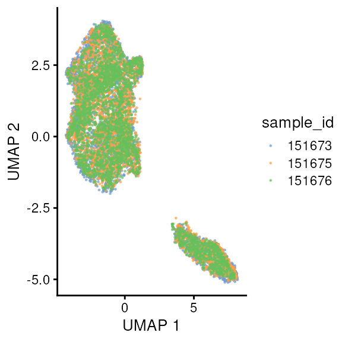
Exercise 1.1
Visualise where the two macro clusters are located spatially. We will
take a very pragmatic approach and get cluster label from splitting the
UMAP coordinated in two (colData() and
reducedDim() will help us, see above), and then visualise
it with ggspavis.
- Modify the
SpatialExperimentobject based on the UMAP1 dimension so to divide those 2 cluster - Visualise the UMAP colouring by the new labelling
- Visualise the Visium slide colouring by the new labelling
7. Clustering
Clustering in spatial transcriptomics is crucial for understanding the intricate cellular composition of tissues. This technique groups cells/pixels based on similar gene expression profiles, enabling the identification of distinct cell types and states within a tissue’s spatial context. Clustering reveals patterns of cellular organisation and differentiation, and interactions in the microenvironment.
Transcriptome based nearest neighbours
First, we establish the number of nearest neighbors to use in the
k-NN graph. This graph forms the basis for clustering, using the
Walktrap algorithm to detect community structures that suggest natural
groupings or clusters in the data. buildSNNGraph is from
the scan package.
## Set number of Nearest-Neighbours (NNs)
k <- 10
## Build the k-NN graph
g_walk <-
spatial_data |>
scran::buildSNNGraph(
k = 10,
use.dimred = "PCA"
) |>
igraph::cluster_walktrap()
clus <- g_walk$membership
## Check how many
table(clus)## clus
## 1 2 3 4 5 6 7
## 966 2856 751 2336 3084 280 274Applying Clustering Labels and Visualising Results: After determining clusters, we apply these labels back to the spatial data and visualise the results using UMAP. This allows us to observe how the data clusters in a reduced dimension space, and further visualise how these clusters map onto the physical tissue sections for context.
We can appreciate here that we get two main pixel clusters.
colLabels(spatial_data) <- factor(clus)
scater::plotUMAP(spatial_data, colour_by = "label") + scale_color_brewer(palette = "Paired")## Scale for colour is already present.
## Adding another scale for colour, which will replace the existing scale.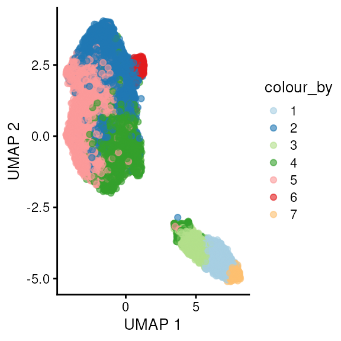
Those two clusters group the white matter from the rest of the layers.
## Plot in tissue map
ggspavis::plotSpots(spatial_data, annotate = "label") +
facet_wrap(~sample_id) +
scale_color_brewer(palette = "Paired")## Scale for colour is already present.
## Adding another scale for colour, which will replace the existing scale.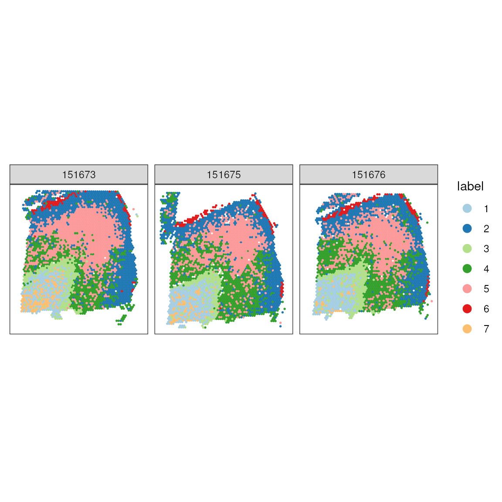
As for comparison, we show the manually annotated regions. We can see that while the single cell style clustering catchers, the overall tissue, architecture, a lot of details are not retrieved. We clusters cannot faithfully recapitulate the tissue morphology. However, they might represent specific cell types within morphological regions.
## Plot ground truth in tissue map
ggspavis::plotSpots(spatial_data, annotate = "spatialLIBD") +
facet_wrap(~sample_id) +
scale_color_manual(values = libd_layer_colors)## Scale for colour is already present.
## Adding another scale for colour, which will replace the existing scale.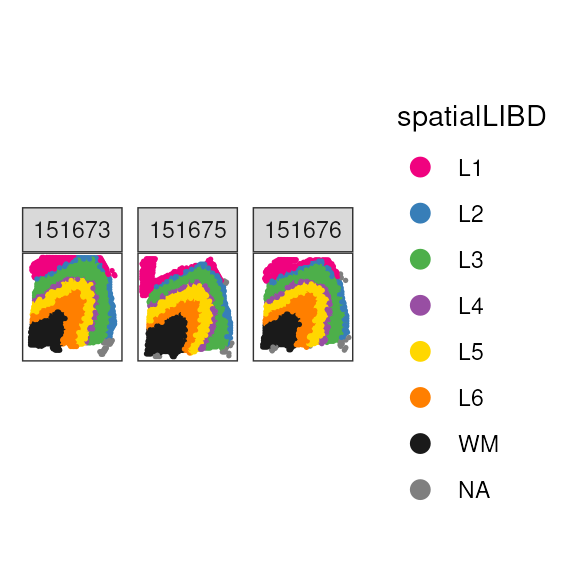
Spatially-aware clustering
To cluster spatial regions (i.e. tissue domain) rather than single-cell types, the clustering algorithms need to take spatial context into account. For example what is the transcriptional profile of the neighbouring pixels or neighbouring cells.
BANKSY combines molecular and spatial information. BANKSY leverages the fact that a cell’s state can be more fully represented by considering both its own transcriptome “nd that of its local microenvironment.This algorithm embeds cells within a combined space that incorporates their own transcriptome and that of their locell’svironment, representing both the cell state and the surrounding microenvironment.
Overview of the algorithm
* Construct a neighborhood graph between cells in physical space (k-nearest neighbors or radius nearest neighbors).
* We use neighborhood graph to compute two matrices:
– ** Average neighborhood expression matrix
– ** “Azimuthal Gabor filter” matrix. It represents the transcriptomic microenvironment around each cell. It measures the gradient of gene expression in each cell’s neighborhood.
* These matrices are then scaled on the basis of a mixing parameter λ, which controls their relative weighting
* Concatenate these two matrices with the original gene–cell expression matrix
* Combine these three matrices by direct product
library(Banksy)
# scale the counts, without log transformation
spatial_data = spatial_data |> logNormCounts(log=FALSE, name = "normcounts")Highly-variable genes
The Banksy documentation, suggest the use of Seurat for
the detection of highly variable genes.
library(Seurat)
# Convert to list
spatial_data_list_for_seurat <- lapply(unique(spatial_data$sample_id), function(x)
spatial_data[, spatial_data$sample_id == x ]
)
seu_list <- lapply(spatial_data_list_for_seurat, function(x) {
x <- as.Seurat(x, data = NULL)
NormalizeData(x, scale.factor = 5000, normalization.method = 'RC')
})
# Compute HVGs
hvgs <- lapply(seu_list, function(x) {
VariableFeatures(FindVariableFeatures(x, nfeatures = 2000))
})
hvgs <- Reduce(union, hvgs)
rm(seu_list, spatial_data_list_for_seurat)
rowData(spatial_data[head(hvgs),])[,c("gene_id", "gene_name")]## DataFrame with 6 rows and 2 columns
## gene_id gene_name
## <character> <character>
## ENSG00000122585 ENSG00000122585 NPY
## ENSG00000123560 ENSG00000123560 PLP1
## ENSG00000211592 ENSG00000211592 IGKC
## ENSG00000244734 ENSG00000244734 HBB
## ENSG00000188536 ENSG00000188536 HBA2
## ENSG00000197971 ENSG00000197971 MBPWe now split the data by sample, to compute the neighbourhood matrices.
# Convert to list
spatial_data_list <- lapply(unique(spatial_data$sample_id), function(x)
spatial_data[
hvgs,
spatial_data$sample_id == x
]
)
spatial_data_list <- lapply(
spatial_data_list,
computeBanksy, # Compute the component neighborhood matrices
assay_name = "normcounts"
)
# Rejoin the datasets
spe_joint <- do.call(cbind, spatial_data_list)Here, we perform PCA using the BANKSY algorithm on the joint dataset. The group argument specifies how to treat different samples, ensuring that features are scaled separately per sample group to account for variations among them.
Note: this step takes long time
spe_joint <- runBanksyPCA( # Run PCA on the Banskly matrix
spe_joint,
lambda = 0.2, # spatial weighting parameter. Larger values (e.g. 0.8) incorporate more spatial neighborhood
group = "sample_id", # Features belonging to the grouping variable will be z-scaled separately.
seed = 42
)Once the dimensional reduction is complete, we cluster the spots
across all samples and use connectClusters to visually
compare these new BANKSY clusters against manual annotations.
spe_joint <- clusterBanksy( # clustering on the principal components computed on the BANKSY matrix
spe_joint,
lambda = 0.2, # spatial weighting parameter. Larger values (e.g. 0.8) incorporate more spatial neighborhood
resolution = 0.7, # numeric vector specifying resolution used for clustering (louvain / leiden).
seed = 42
)
colData(spe_joint)$clust_annotation = colData(spe_joint)$Cluster
spe_joint <- connectClusters(spe_joint)As an optional step, we smooth the cluster labels for each sample independently, which can enhance the visual coherence of clusters, especially in heterogeneous biological samples.
From SpiceMix paper Chidester et al., 2023
spatial_data_list <- lapply(
unique(spe_joint$sample_id),
function(x)
spe_joint[, spe_joint$sample_id == x]
)
spatial_data_list <- lapply(
spatial_data_list,
smoothLabels,
cluster_names = "clust_M0_lam0.2_k50_res0.7",
k = 6L,
verbose = FALSE
)
names(spatial_data_list) <- paste0("sample_", unique(spe_joint$sample_id))The raw and smoothed cluster labels are stored in the
colData slot of each SingleCellExperiment or
SpatialExperiment object.
cluster_metadata =
colData(spatial_data_list$sample_151673)[, c("clust_M0_lam0.2_k50_res0.7", "clust_M0_lam0.2_k50_res0.7_smooth")]
knitr::kable(head(cluster_metadata), format = "html")| clust_M0_lam0.2_k50_res0.7 | clust_M0_lam0.2_k50_res0.7_smooth | |
|---|---|---|
| AAACAAGTATCTCCCA-1 | 4 | 4 |
| AAACAATCTACTAGCA-1 | 7 | 6 |
| AAACACCAATAACTGC-1 | 2 | 2 |
| AAACAGAGCGACTCCT-1 | 4 | 1 |
| AAACAGCTTTCAGAAG-1 | 3 | 3 |
| AAACAGGGTCTATATT-1 | 2 | 2 |
Using cluster comparison metrics like the adjusted Rand index (ARI) we evaluate the performance of our clustering approach. This statistical analysis helps validate the clustering results against known labels or pathologies.
The Adjusted Rand Index (ARI) is a measure of the similarity between two data clusterings. Measures degree of overlapping between two partitions.
compareClusters(spatial_data_list$sample_151673, func = 'ARI')## clust_M0_lam0.2_k50_res0.7 clust_annotation
## clust_M0_lam0.2_k50_res0.7 1.000 0.326
## clust_annotation 0.326 1.000
## clust_M0_lam0.2_k50_res0.7_smooth 0.941 0.323
## clust_M0_lam0.2_k50_res0.7_smooth
## clust_M0_lam0.2_k50_res0.7 0.941
## clust_annotation 0.323
## clust_M0_lam0.2_k50_res0.7_smooth 1.000We calculate the ARI for each sample to assess the consistency and accuracy of our clustering across different samples.
ari <- sapply(spatial_data_list, function(x) as.numeric(tail(compareClusters(x, func = "ARI")[, 1], n = 1)))
ari## sample_151673 sample_151675 sample_151676
## 0.941 0.937 0.923Visualising Clusters and Annotations on Spatial Coordinates: We utilise the ggspavis package to visually map BANKSY clusters and manual annotations onto the spatial coordinates of the dataset, providing a comprehensive visual overview of spatial and clustering data relationships.
# Use scater:::.get_palette('tableau10medium')
library(cowplot)
pal <- c(
"#1abc9c", "#3498db", "#9b59b6", "#e74c3c", "#34495e",
"#f39c12", "#d35400", "#7f8c8d", "#2ecc71", "#e67e22"
)
ggspavis::plotSpots(
do.call(cbind, spatial_data_list),
annotate = sprintf("%s_smooth", "clust_M0_lam0.2_k50_res0.7"),
pal = pal
) +
facet_wrap(~sample_id) +
theme(legend.position = "none") +
labs(title = "BANKSY clusters")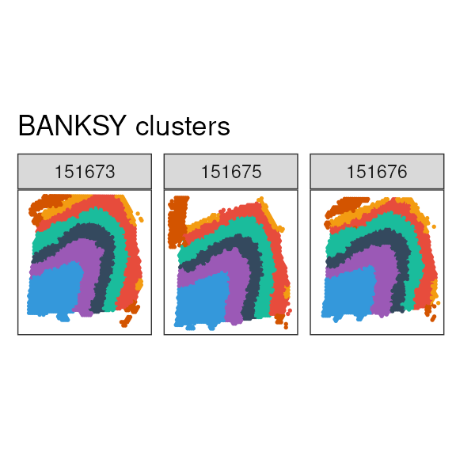
ggspavis::plotSpots(
do.call(cbind, spatial_data_list),
annotate = sprintf("%s", "clust_M0_lam0.2_k50_res0.7"),
pal = pal
) +
facet_wrap(~sample_id) +
theme(legend.position = "none") +
labs(title = "BANKSY clusters")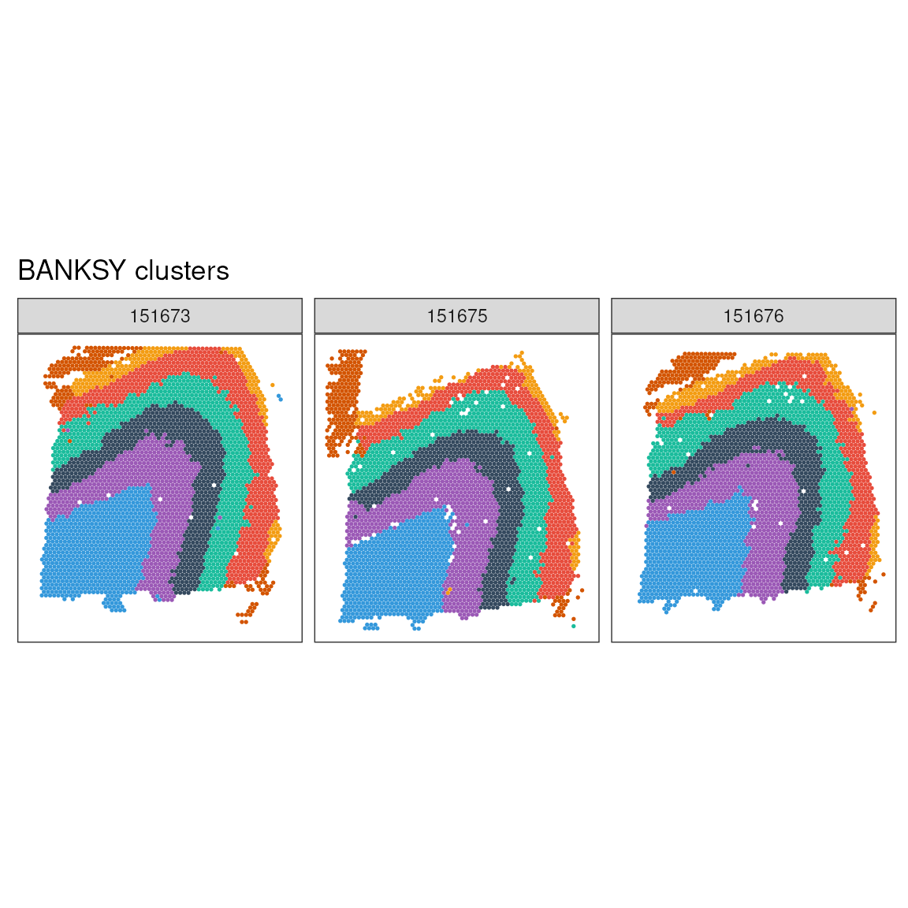
ggspavis::plotSpots(spatial_data, annotate = "spatialLIBD") +
facet_wrap(~sample_id) +
scale_color_manual(values = libd_layer_colors) +
theme(legend.position = "none") +
labs(title = "spatialLIBD regions")## Scale for colour is already present.
## Adding another scale for colour, which will replace the existing scale.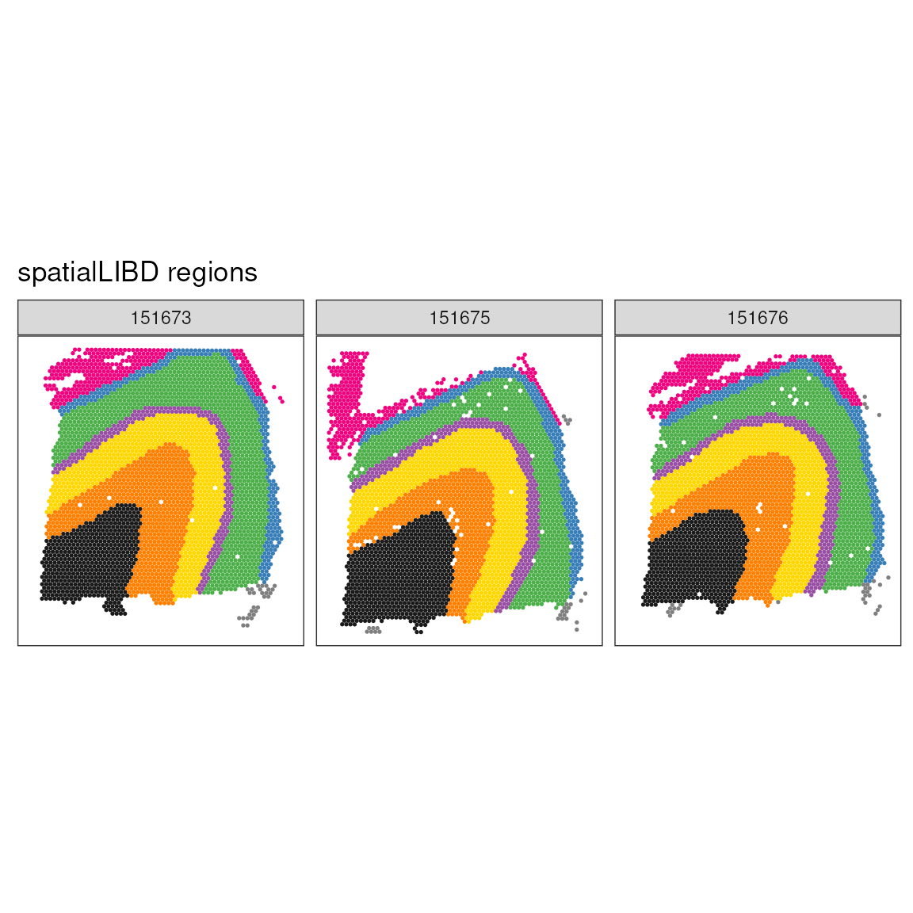
Exercise 1.2
We have applied cluster smoothing using smoothLabels.
How much do you think this operation has affected the cluster labels. To
find out,
- Plot the non smoothed cluster
- identify the pixel that have been smoothed, and
- visualise them using
plotSpotQCthat we have used above.
8. Deconvolution of pixel-based spatial data
One of the popular algorithms for spatial deconvolution is SPOTlight. Elosua-Bayes et al., 2021.
SPOTlight uses a seeded non-negative matrix factorization regression, initialized using cell-type marker genes and non-negative least squares.
Producing the reference for single-cell databases
cellNexus is a query interface that allow the programmatic exploration and retrieval of the harmonised, curated and reannotated CELLxGENE single-cell human cell atlas. Data can be retrieved at cell, sample, or dataset levels based on filtering criteria.
Harmonised data is stored in the ARDC Nectar Research Cloud, and most cellNexus functions interact with Nectar via web requests, so a network connection is required for most functionality.
Mangiola et al., 2025 doi doi.org/10.1101/2023.06.08.542671

# Get reference
library(scRNAseq)
brain_reference <- fetchDataset("zhong-prefrontal-2018", "2023-12-22")
brain_reference =
brain_reference |>
scuttle::aggregateAcrossCells(ids = paste(brain_reference$sample, brain_reference$cell_types, sep = "_"))
brain_reference = brain_reference[, brain_reference |> assay() |> colSums() > 0]
brain_reference = brain_reference[, !brain_reference$cell_types |> is.na()]
brain_reference =
brain_reference |>
logNormCounts()| developmental_stage | gender | sample | cell_types | week | Gene_num | Pre_Map_Reads | Aligned_Reads | MappingRate | ids | ncells | sizeFactor | |
|---|---|---|---|---|---|---|---|---|---|---|---|---|
| GW08_PFC1_GABAergic neurons | 8 weeks after gestation | female | GW08_PFC1 | GABAergic neurons | GW08 | NA | NA | NA | NA | GW08_PFC1_GABAergic neurons | 3 | 0.0382891 |
| GW08_PFC1_Microglia | 8 weeks after gestation | female | GW08_PFC1 | Microglia | GW08 | NA | NA | NA | NA | GW08_PFC1_Microglia | 2 | 0.2713548 |
| GW08_PFC1_Neurons | 8 weeks after gestation | female | GW08_PFC1 | Neurons | GW08 | NA | NA | NA | NA | GW08_PFC1_Neurons | 15 | 0.6444229 |
| GW08_PFC1_Stem cells | 8 weeks after gestation | female | GW08_PFC1 | Stem cells | GW08 | NA | NA | NA | NA | GW08_PFC1_Stem cells | 3 | 0.1336195 |
| GW09_PFC1_GABAergic neurons | 9 weeks after gestation | female | GW09_PFC1 | GABAergic neurons | GW09 | NA | NA | NA | NA | GW09_PFC1_GABAergic neurons | 3 | 0.1548780 |
| GW09_PFC1_Neurons | 9 weeks after gestation | female | GW09_PFC1 | Neurons | GW09 | NA | NA | NA | NA | GW09_PFC1_Neurons | 35 | 3.9421720 |
These are the cell types included in our reference, and the number of pseudobulk samples we have for each cell type.
table(brain_reference$cell_types)##
## Astrocytes GABAergic neurons Microglia Neurons
## 18 38 28 39
## OPC Stem cells
## 27 25These are the number of samples we have for each of the three data sets.
table(brain_reference$sample)##
## GW08_PFC1 GW09_PFC1 GW10_PFC1_1 GW10_PFC1_2 GW10_PFC2_1 GW10_PFC2_2
## 4 3 3 3 4 4
## GW10_PFC3 GW12_PFC1 GW13_PFC1 GW16_PFC1_1 GW16_PFC1_2 GW16_PFC1_3
## 3 5 3 4 3 4
## GW16_PFC1_4 GW16_PFC1_5 GW16_PFC1_6 GW16_PFC1_7 GW16_PFC1_8 GW16_PFC1_9
## 5 5 5 5 5 5
## GW19_PFC1_1 GW19_PFC1_2 GW19_PFC1_3 GW23_PFC1_1 GW23_PFC1_2 GW23_PFC1_3
## 5 5 4 4 5 3
## GW23_PFC2_1 GW23_PFC2_2 GW23_PFC2_3 GW23_PFC2_4 GW23_PFC2_5 GW26_PFC1_1
## 5 4 5 5 4 5
## GW26_PFC1_10 GW26_PFC1_2 GW26_PFC1_3 GW26_PFC1_4 GW26_PFC1_5 GW26_PFC1_6
## 5 6 5 5 5 6
## GW26_PFC1_7 GW26_PFC1_8 GW26_PFC1_9
## 5 6 5Now, we identify the variable genes within each dataset, to not capture technical effects, and identify the union of variable genes for further analysis.
genes <- !grepl(pattern = "^Rp[l|s]|Mt", x = rownames(brain_reference))
# Convert to list
brain_reference_list <- lapply(unique(brain_reference$dataset_id), function(x) brain_reference[, brain_reference$dataset_id == x])
dec = scran::modelGeneVar(brain_reference, subset.row = genes, block = brain_reference$sample_id)
hvg_CAQ = scran::getTopHVGs(dec, n = 1000)
hvg_CAQ = unique( unlist(hvg_CAQ))
head(hvg_CAQ)## [1] "OLIG1" "BCAN" "C3" "C1QB" "CCL3" "CX3CR1"Initially, the code prepares the spatial data by setting gene names as row identifiers.
spatial_data_gene_name = spatial_data
rownames(spatial_data_gene_name) <- rowData(spatial_data_gene_name)$gene_name
spatial_data_gene_name = logNormCounts(spatial_data_gene_name)## Found more than one class "package_version" in cache; using the first, from namespace 'SeuratObject'## Also defined by 'alabaster.base'## Found more than one class "package_version" in cache; using the first, from namespace 'SeuratObject'## Also defined by 'alabaster.base'We then identify and score relevant marker genes based on their expression and significance across different cell types. The result is a curated list of high-potential marker genes, organised and ready for deeper analysis and interpretation in the context of spatial gene expression patterns.
This function provides a convenience wrapper for marker gene
identification between groups of cells, based on running
pairwiseTTests.
This function represents a simpler and more intuitive summary of the differences between the groups. We do this by realizing that the p-values for these types of comparisons are largely meaningless; individual cells are not meaningful units of experimental replication, while the groups themselves are defined from the data. Thus, by discarding the p-values, we can simplify our marker selection by focusing only on the effect sizes between groups.
mgs <- scran::scoreMarkers(
brain_reference,
groups = brain_reference$cell_types,
# Omit mitochondrial genes and keep all the genes in spatial
subset.row =
grep("(^MT-)|(^mt-)|(\\.)|(-)", rownames(brain_reference), value=TRUE, invert=TRUE) |>
intersect(rownames(spatial_data_gene_name))
)
# Select the most informative markers
mgs_df <- lapply(names(mgs), function(i) {
x <- mgs[[i]]
# Filter and keep relevant marker genes, those with AUC > 0.8
x <- x[x$mean.AUC > 0.8, ]
# Sort the genes from highest to lowest weight
x <- x[order(x$mean.AUC, decreasing = TRUE), ]
# Add gene and cluster id to the dataframe
x$gene <- rownames(x)
x$cluster <- i
data.frame(x)
})
mgs_df <- do.call(rbind, mgs_df)
head(mgs_df)## self.average other.average self.detected other.detected mean.logFC.cohen
## CLU 13.04434 7.354836 1 0.9349685 3.284103
## PTN 14.23937 9.908782 1 0.9848571 3.639877
## CST3 15.01614 10.143497 1 0.9842105 4.276129
## HOPX 12.16743 5.769645 1 0.8571423 2.918201
## TTYH1 11.46129 6.643598 1 0.9026910 2.646161
## MLC1 10.48779 3.884452 1 0.6874225 3.283323
## min.logFC.cohen median.logFC.cohen max.logFC.cohen rank.logFC.cohen
## CLU 2.095170 2.996598 5.187289 3
## PTN 1.435501 3.862314 6.435137 2
## CST3 1.771824 3.953989 7.535800 1
## HOPX 1.554792 3.515078 3.958490 7
## TTYH1 1.622048 2.806502 3.775169 14
## MLC1 1.610386 3.780573 4.493997 1
## mean.AUC min.AUC median.AUC max.AUC rank.AUC mean.logFC.detected
## CLU 0.9969218 0.9866667 1.0000000 1 1 0.09372303
## PTN 0.9943210 0.9777778 1.0000000 1 1 0.02107825
## CST3 0.9917695 0.9588477 1.0000000 1 1 0.02243015
## HOPX 0.9900576 0.9547325 1.0000000 1 1 0.21245867
## TTYH1 0.9897760 0.9650206 0.9955556 1 1 0.14541250
## MLC1 0.9879012 0.9506173 1.0000000 1 1 0.53653045
## min.logFC.detected median.logFC.detected max.logFC.detected
## CLU 1.601713e-16 5.573335e-02 0.20979238
## PTN -3.203427e-16 1.601713e-16 0.05573335
## CST3 -3.203427e-16 0.000000e+00 0.11215073
## HOPX 1.091634e-01 2.337602e-01 0.32736198
## TTYH1 0.000000e+00 1.137066e-01 0.38994652
## MLC1 2.371477e-01 4.066253e-01 1.12454510
## rank.logFC.detected gene cluster
## CLU 1557 CLU Astrocytes
## PTN 1557 PTN Astrocytes
## CST3 1557 CST3 Astrocytes
## HOPX 974 HOPX Astrocytes
## TTYH1 1157 TTYH1 Astrocytes
## MLC1 518 MLC1 AstrocytesWe now utilise SPOTlight to deconvolve
tisslet’smposition from our independent mouse brain reference. The
result is visualised through a scatter pie plot, which provides a
graphical representation of the spatial distribution of cell types
within a let’sfic sample. This visualisation aids in understanding the
spatial heterogeneity.
library(SPOTlight)
res <- SPOTlight(
x = brain_reference |> assay("logcounts"),
y = spatial_data_gene_name |> assay("logcounts"),
groups = brain_reference$cell_types,
group_id = "cluster",
mgs = mgs_df,
hvg = intersect(hvg_CAQ, rownames(spatial_data_gene_name)),
weight_id = "mean.AUC",
gene_id = "gene"
)
cell_first_sample = colData(spatial_data_gene_name)$sample_id=="151673"
plotSpatialScatterpie(
x = spatial_data_gene_name[,cell_first_sample],
y = res$mat[cell_first_sample,],
cell_types = colnames(res$mat[cell_first_sample,]),
img = FALSE,
scatterpie_alpha = 1,
pie_scale = 0.4
) 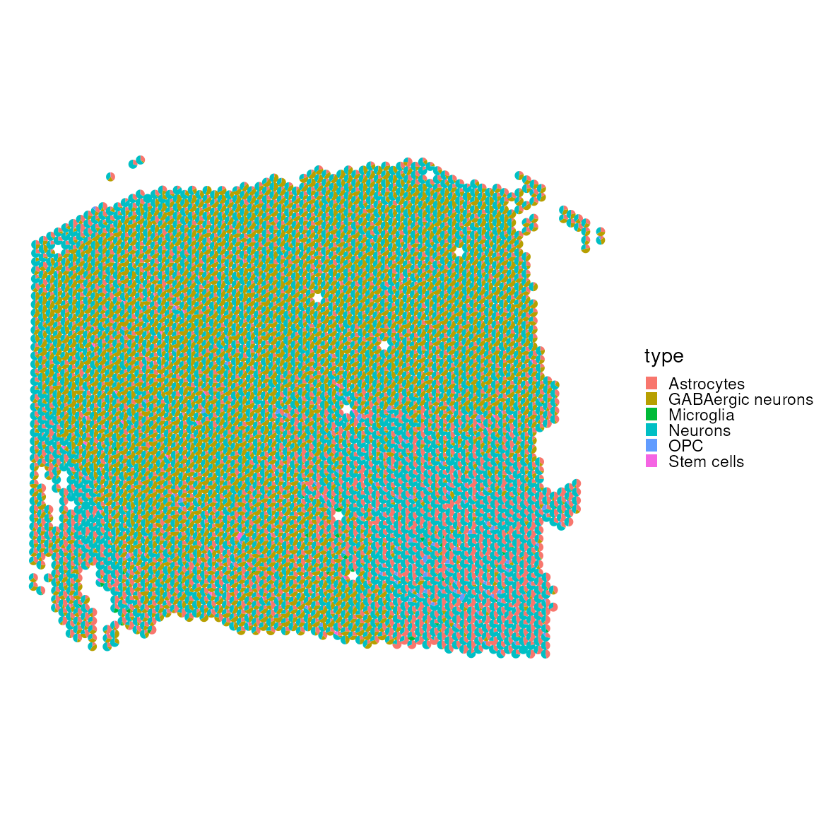
Let’s visualise without pit’syte_cell and endothelial cells, which oclet’sa lot of the visual spectrum.
plotSpatialScatterpie(
x = spatial_data_gene_name[,cell_first_sample],
y = res$mat[cell_first_sample,-c(2,9)],
cell_types = colnames(res$mat[cell_first_sample,-c(2,9)]),
img = FALSE,
scatterpie_alpha = 1,
pie_scale = 0.4
) ## Found more than one class "package_version" in cache; using the first, from namespace 'SeuratObject'## Also defined by 'alabaster.base'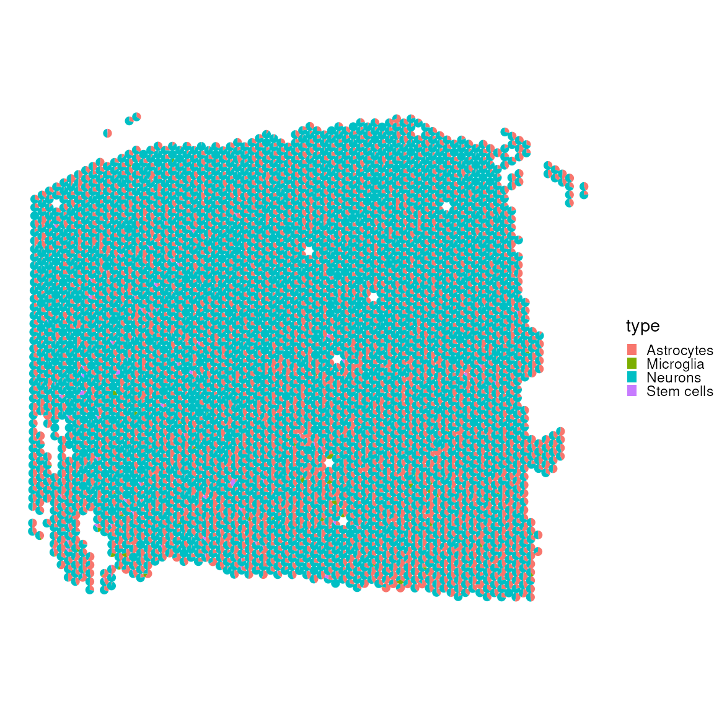
Let’s also exclude without muscle_cell, which occupy a lot of the visual spectrum.
plotSpatialScatterpie(
x = spatial_data_gene_name[,cell_first_sample],
y = res$mat[cell_first_sample,-c(2, 9, 5)],
cell_types = colnames(res$mat[cell_first_sample,-c(2, 9, 5)]),
img = FALSE,
scatterpie_alpha = 1,
pie_scale = 0.4
) ## Found more than one class "package_version" in cache; using the first, from namespace 'SeuratObject'## Also defined by 'alabaster.base'
No, let’s look at the correlation matrices to see which cell type are most often occurring rather than mutually exclusive within our data set.
plotCorrelationMatrix(res$mat)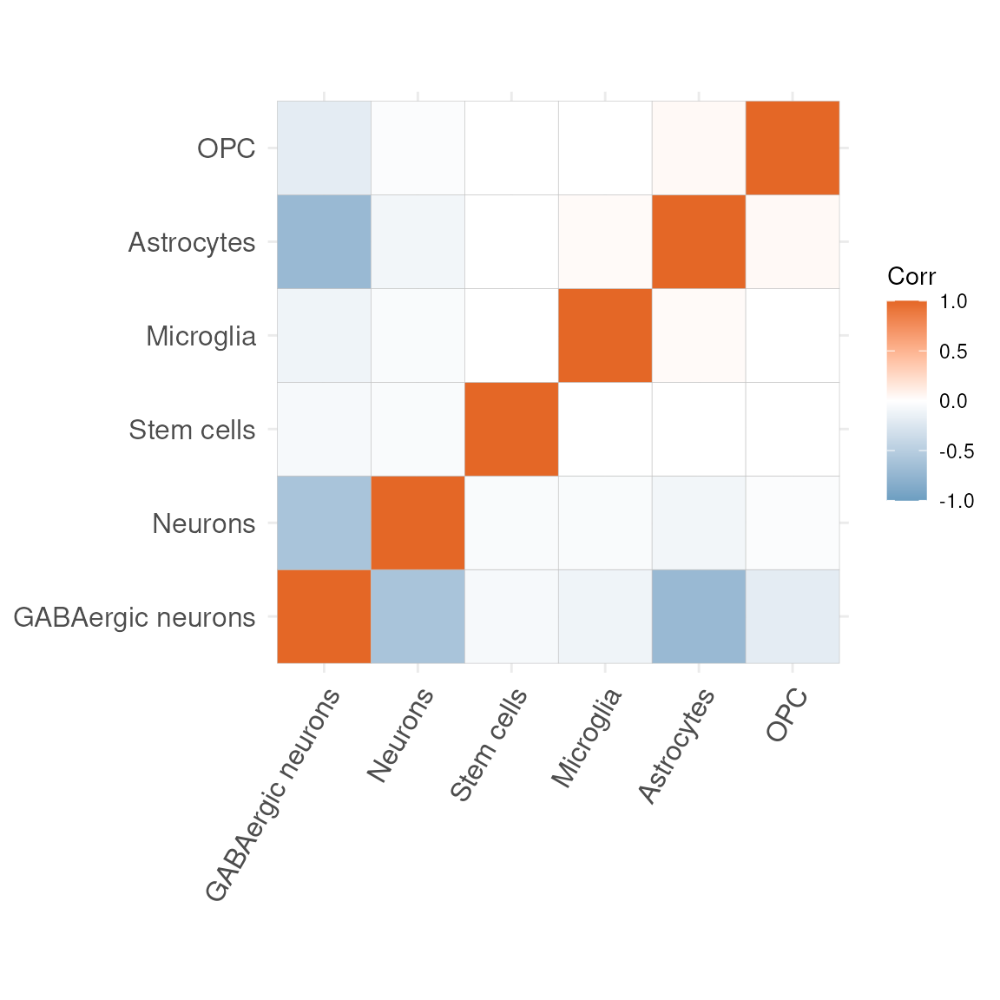
Excercise
Exercise 1.4
Rather than looking at the correlation matrix, overall, let’s observe whether the correlation structure amongst cell types is consistent across samples. Do you think it’s consistent or noticeably different?
res_spatialLIBD = split(data.frame(res$mat), colData(spatial_data_gene_name)$spatialLIBD )
lapply(res_spatialLIBD, function(x) plotCorrelationMatrix(as.matrix(x[,-10]))) ## $L1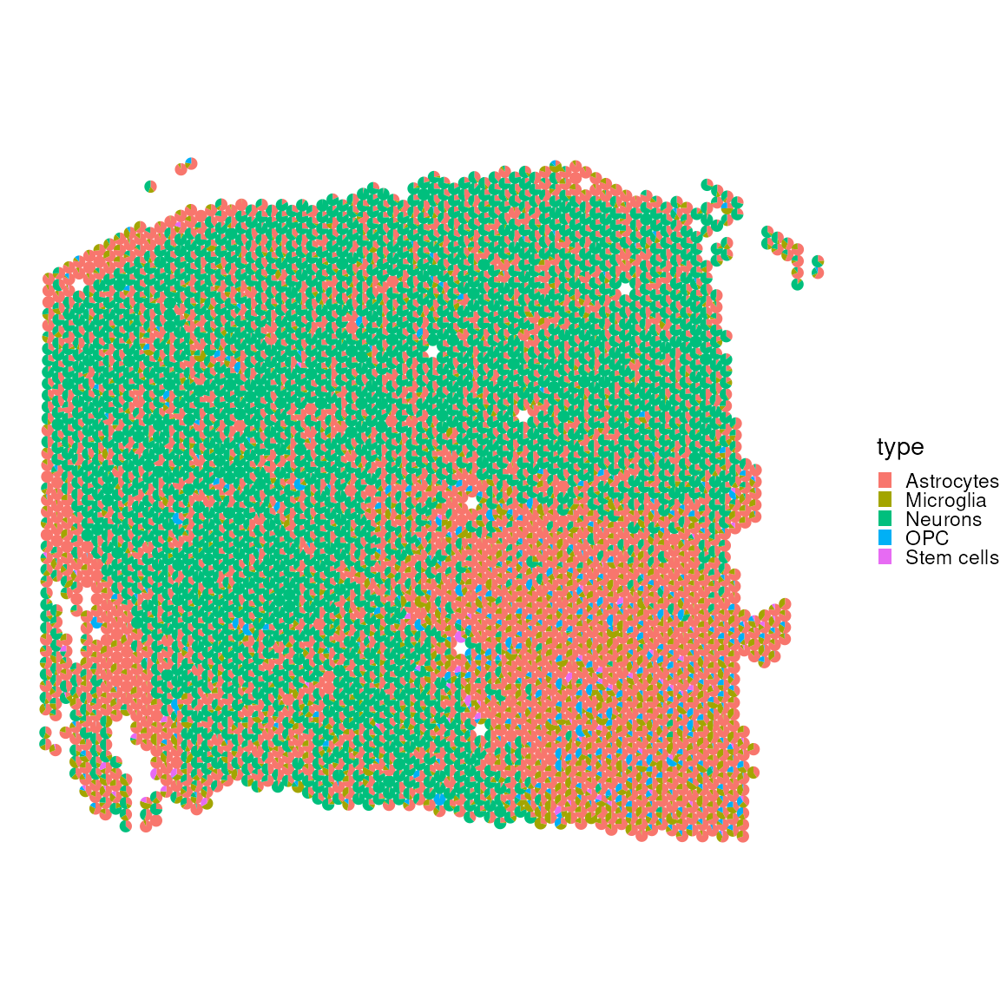
##
## $L2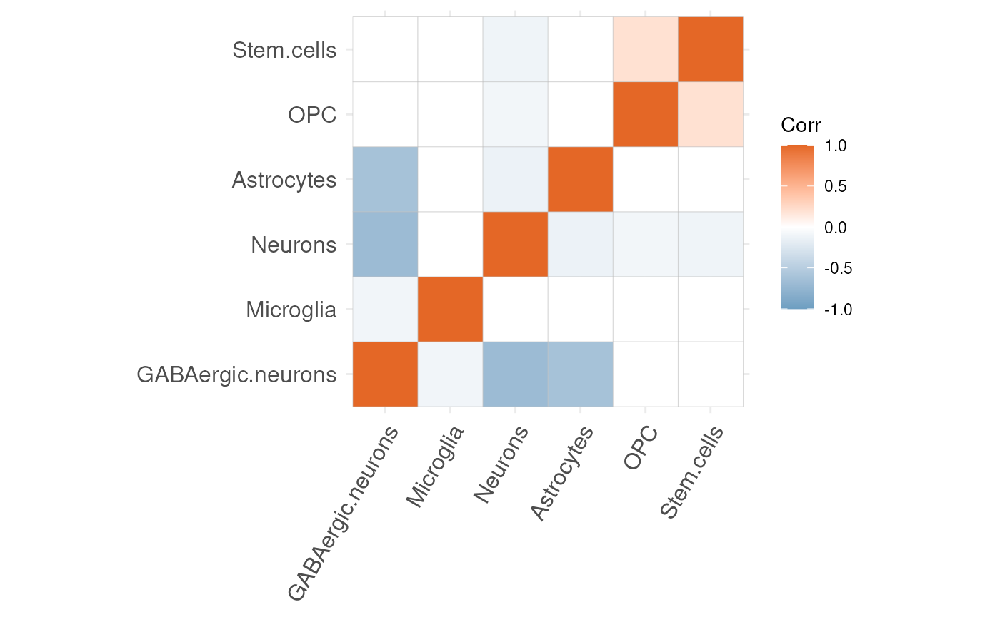
##
## $L3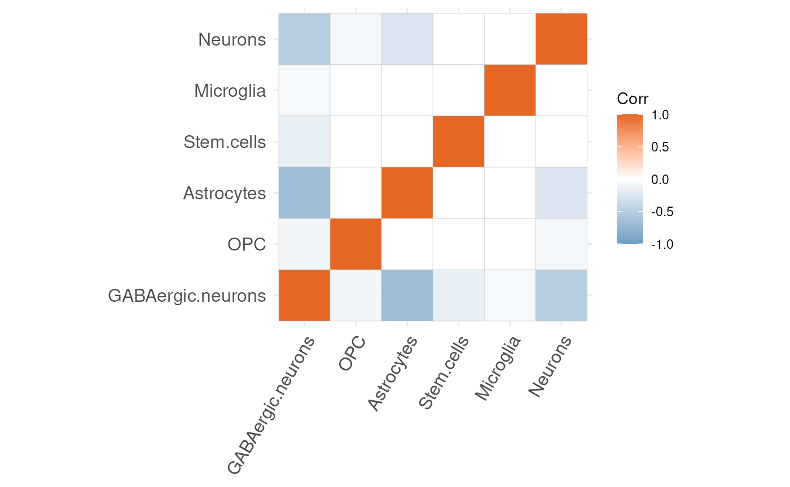
##
## $L4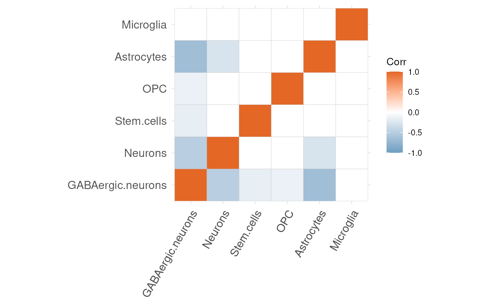
##
## $L5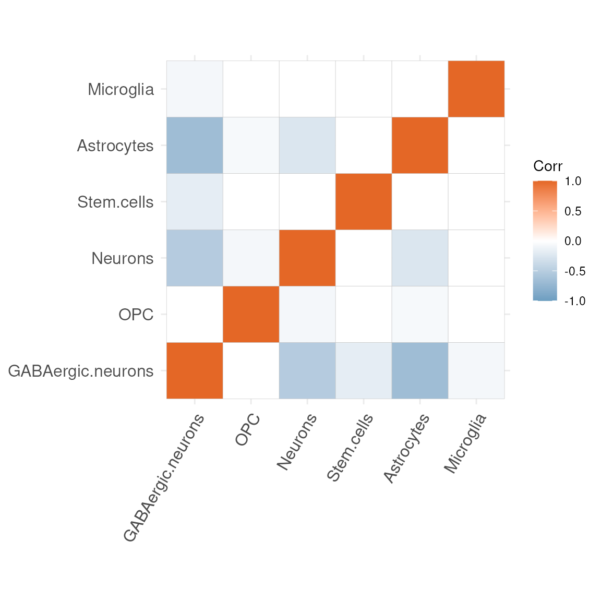
##
## $L6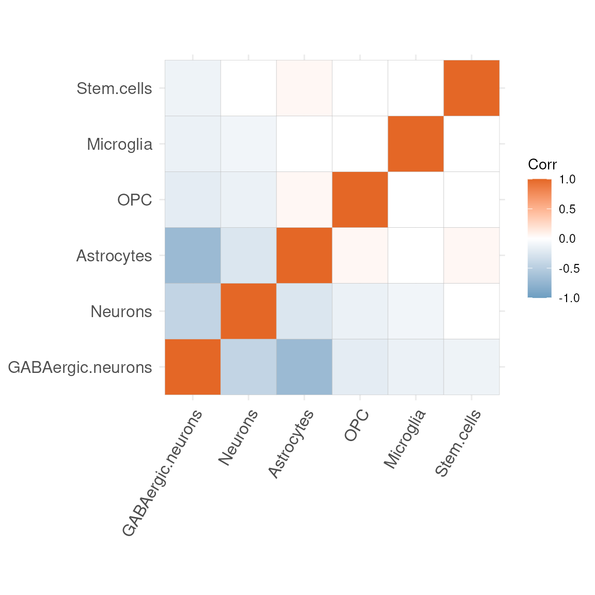
##
## $WM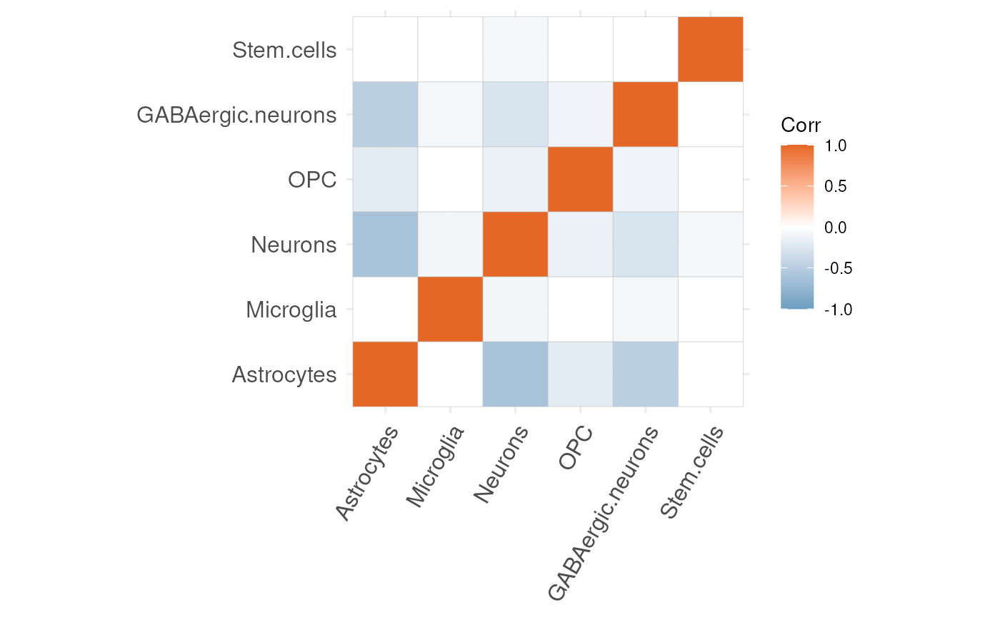
Exercise 1.5
Some of the most positive correlations involve the endothelial cells with Oligodendrocytes and Leptomeningeal cells.
Leptomeningeal cells refer to the cells that make up the leptomeninges, which consist of two of the three layers olet’s meninges surrounding the brain and spinal cord: the arachnoid mater and the pia mater. These layers play a critical role in protecting the central nervous system and assisting in various physiological processes.
Oligodendrocytes are a type of glial cell in the central nervous system (CNS) of vertebrates, including humans and mouse. These cells are crucial for the formation and maintenance of the myelin sheath, a fatty layer that encases the axons of many neurons.
Let’s try to visualise the pixel where these cell types most occur.
- Label pixel that have > 10% (> 0.1) endothelial_cell and leptomeningeal_cell
- Label pixels that have > 40% (> 0.4) across these two cells
- Plot pixels colouring by the new label
mat_df = as.data.frame(res$mat)Session Information
## R version 4.5.0 (2025-04-11)
## Platform: x86_64-pc-linux-gnu
## Running under: Ubuntu 24.04.2 LTS
##
## Matrix products: default
## BLAS: /usr/lib/x86_64-linux-gnu/openblas-pthread/libblas.so.3
## LAPACK: /usr/lib/x86_64-linux-gnu/openblas-pthread/libopenblasp-r0.3.26.so; LAPACK version 3.12.0
##
## locale:
## [1] LC_CTYPE=en_US.UTF-8 LC_NUMERIC=C
## [3] LC_TIME=en_US.UTF-8 LC_COLLATE=en_US.UTF-8
## [5] LC_MONETARY=en_US.UTF-8 LC_MESSAGES=en_US.UTF-8
## [7] LC_PAPER=en_US.UTF-8 LC_NAME=C
## [9] LC_ADDRESS=C LC_TELEPHONE=C
## [11] LC_MEASUREMENT=en_US.UTF-8 LC_IDENTIFICATION=C
##
## time zone: Etc/UTC
## tzcode source: system (glibc)
##
## attached base packages:
## [1] stats4 stats graphics grDevices utils datasets methods
## [8] base
##
## other attached packages:
## [1] SPOTlight_1.13.0 scRNAseq_2.23.0
## [3] cowplot_1.1.3 Seurat_5.3.0
## [5] SeuratObject_5.1.0 sp_2.2-0
## [7] Banksy_1.5.0 ExperimentHub_2.99.0
## [9] AnnotationHub_3.99.1 BiocFileCache_2.99.0
## [11] dbplyr_2.5.0 spatialLIBD_1.21.4
## [13] scran_1.37.0 scater_1.37.0
## [15] scuttle_1.19.0 ggspavis_1.15.0
## [17] ggplot2_3.5.2 SpatialExperiment_1.19.0
## [19] SingleCellExperiment_1.31.0 SummarizedExperiment_1.39.0
## [21] Biobase_2.69.0 GenomicRanges_1.61.0
## [23] GenomeInfoDb_1.45.3 IRanges_2.43.0
## [25] S4Vectors_0.47.0 BiocGenerics_0.55.0
## [27] generics_0.1.3 MatrixGenerics_1.21.0
## [29] matrixStats_1.5.0 here_1.0.1
##
## loaded via a namespace (and not attached):
## [1] goftest_1.2-3 DT_0.33 Biostrings_2.77.0
## [4] HDF5Array_1.37.0 vctrs_0.6.5 spatstat.random_3.3-3
## [7] digest_0.6.37 png_0.1-8 shape_1.4.6.1
## [10] registry_0.5-1 gypsum_1.5.0 ggrepel_0.9.6
## [13] deldir_2.0-4 parallelly_1.44.0 alabaster.sce_1.9.0
## [16] magick_2.8.6 MASS_7.3-65 pkgdown_2.1.2
## [19] reshape2_1.4.4 httpuv_1.6.16 foreach_1.5.2
## [22] withr_3.0.2 ggfun_0.1.8 xfun_0.52
## [25] survival_3.8-3 memoise_2.0.1 benchmarkme_1.0.8
## [28] ggbeeswarm_0.7.2 systemfonts_1.2.3 ragg_1.4.0
## [31] zoo_1.8-14 GlobalOptions_0.1.2 pbapply_1.7-2
## [34] rematch2_2.1.2 KEGGREST_1.49.0 promises_1.3.2
## [37] httr_1.4.7 restfulr_0.0.15 globals_0.18.0
## [40] fitdistrplus_1.2-2 rhdf5filters_1.21.0 rhdf5_2.53.0
## [43] UCSC.utils_1.5.0 miniUI_0.1.2 curl_6.2.2
## [46] ScaledMatrix_1.17.0 h5mread_1.1.0 polyclip_1.10-7
## [49] SparseArray_1.9.0 golem_0.5.1 xtable_1.8-4
## [52] stringr_1.5.1 desc_1.4.3 doParallel_1.0.17
## [55] evaluate_1.0.3 S4Arrays_1.9.0 irlba_2.3.5.1
## [58] colorspace_2.1-1 filelock_1.0.3 ROCR_1.0-11
## [61] reticulate_1.42.0 spatstat.data_3.1-6 shinyWidgets_0.9.0
## [64] magrittr_2.0.3 lmtest_0.9-40 later_1.4.2
## [67] viridis_0.6.5 lattice_0.22-7 NMF_0.28
## [70] spatstat.geom_3.3-6 future.apply_1.11.3 scattermore_1.2
## [73] XML_3.99-0.18 RcppAnnoy_0.0.22 pillar_1.10.2
## [76] nlme_3.1-168 iterators_1.0.14 gridBase_0.4-7
## [79] compiler_4.5.0 beachmat_2.25.0 RSpectra_0.16-2
## [82] stringi_1.8.7 tensor_1.5 GenomicAlignments_1.45.0
## [85] plyr_1.8.9 crayon_1.5.3 abind_1.4-8
## [88] BiocIO_1.19.0 locfit_1.5-9.12 bit_4.6.0
## [91] dplyr_1.1.4 codetools_0.2-20 textshaping_1.0.1
## [94] BiocSingular_1.25.0 bslib_0.9.0 alabaster.ranges_1.9.0
## [97] paletteer_1.6.0 GetoptLong_1.0.5 plotly_4.10.4
## [100] mime_0.13 splines_4.5.0 circlize_0.4.16
## [103] Rcpp_1.0.14 fastDummies_1.7.5 sparseMatrixStats_1.21.0
## [106] attempt_0.3.1 knitr_1.50 blob_1.2.4
## [109] clue_0.3-66 BiocVersion_3.22.0 AnnotationFilter_1.33.0
## [112] fs_1.6.6 nnls_1.6 listenv_0.9.1
## [115] RcppHungarian_0.3 tibble_3.2.1 Matrix_1.7-3
## [118] statmod_1.5.0 tweenr_2.0.3 pkgconfig_2.0.3
## [121] tools_4.5.0 cachem_1.1.0 aricode_1.0.3
## [124] RSQLite_2.3.11 viridisLite_0.4.2 DBI_1.2.3
## [127] fastmap_1.2.0 rmarkdown_2.29 scales_1.4.0
## [130] grid_4.5.0 ica_1.0-3 Rsamtools_2.25.0
## [133] sass_0.4.10 patchwork_1.3.0 BiocManager_1.30.25
## [136] dotCall64_1.2 RANN_2.6.2 alabaster.schemas_1.9.0
## [139] farver_2.1.2 scatterpie_0.2.4 yaml_2.3.10
## [142] rtracklayer_1.69.0 cli_3.6.5 purrr_1.0.4
## [145] lifecycle_1.0.4 dbscan_1.2.2 uwot_0.2.3
## [148] bluster_1.19.0 sessioninfo_1.2.3 ggcorrplot_0.1.4.1
## [151] BiocParallel_1.43.0 gtable_0.3.6 rjson_0.2.23
## [154] ggridges_0.5.6 progressr_0.15.1 parallel_4.5.0
## [157] limma_3.65.0 jsonlite_2.0.0 edgeR_4.7.2
## [160] RcppHNSW_0.6.0 bitops_1.0-9 benchmarkmeData_1.0.4
## [163] bit64_4.6.0-1 Rtsne_0.17 yulab.utils_0.2.0
## [166] alabaster.matrix_1.9.0 spatstat.utils_3.1-3 BiocNeighbors_2.3.0
## [169] ggside_0.3.1 alabaster.se_1.9.0 jquerylib_0.1.4
## [172] metapod_1.17.0 config_0.3.2 dqrng_0.4.1
## [175] spatstat.univar_3.1-3 lazyeval_0.2.2 alabaster.base_1.9.0
## [178] shiny_1.10.0 htmltools_0.5.8.1 sctransform_0.4.2
## [181] rappdirs_0.3.3 ensembldb_2.33.0 glue_1.8.0
## [184] spam_2.11-1 httr2_1.1.2 XVector_0.49.0
## [187] RCurl_1.98-1.17 rprojroot_2.0.4 mclust_6.1.1
## [190] gridExtra_2.3 sccore_1.0.6 igraph_2.1.4
## [193] R6_2.6.1 tidyr_1.3.1 labeling_0.4.3
## [196] GenomicFeatures_1.61.0 rngtools_1.5.2 cluster_2.1.8.1
## [199] Rhdf5lib_1.31.0 DelayedArray_0.35.1 tidyselect_1.2.1
## [202] vipor_0.4.7 ProtGenerics_1.41.0 ggforce_0.4.2
## [205] AnnotationDbi_1.71.0 future_1.49.0 leidenAlg_1.1.5
## [208] rsvd_1.0.5 KernSmooth_2.23-26 data.table_1.17.0
## [211] htmlwidgets_1.6.4 ComplexHeatmap_2.25.0 RColorBrewer_1.1-3
## [214] rlang_1.1.6 spatstat.sparse_3.1-0 spatstat.explore_3.4-2
## [217] beeswarm_0.4.0References
<mangiola.s at wehi.edu.au>↩︎